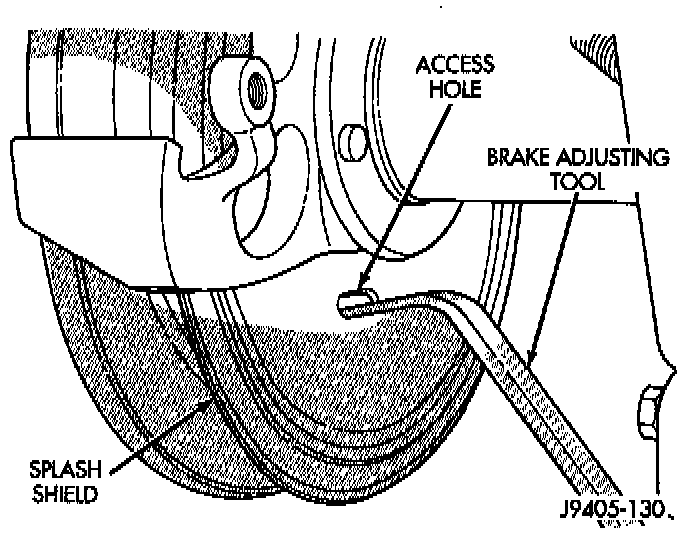
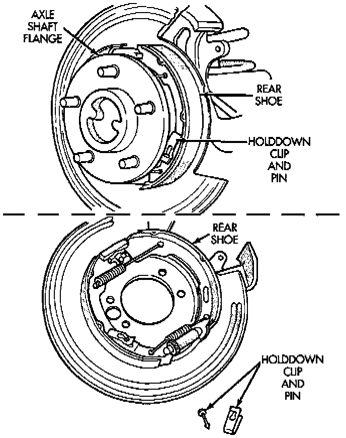
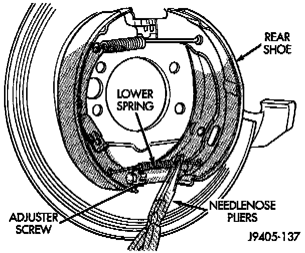
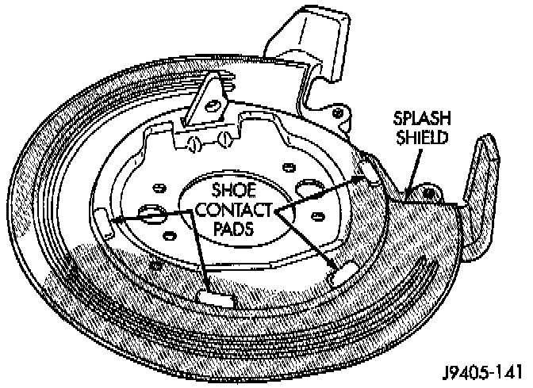

Parking Brake Shoe: Service and Repair
REMOVAL1. Raise vehicle.
2. Remove rear wheel and tire assembly.
3. Remove brake caliper.
CAUTION: Do not allow brake hose to support caliper weight. Support caliper with wire attached to suspension component.
4. Remove rubber access plug from back of rear disc brake splash shield.

5. Retract parking brake shoes with brake adjuster tool. Position tool at top of star wheel and rotate wheel downward in clockwise direction (while facing front of vehicle).
6. Remove rotor from axle hub flange.
Parking Brake Shoe Removal:

7. Remove shoe hold-down clips and pins. Clip is held in place by pin which fits in clip notch. To remove clip, first push clip ends together with thumb or forefinger. Next, slide clip upward until head of pin clears narrow part of notch. Then remove pin and clip.

8. Remove upper and lower springs from shoes with needle nose pliers.
9. Tilt shoes outward and remove adjuster screw. Note adjuster screw position for installation reference.
10. Inspect condition of all brake components. Replace parts if bent, damaged or worn.
11. Clean and inspect condition of adjuster screw assembly. Replace assembly if worn, or damaged.
INSTALLATION

1. Lubricate shoe contact pads, cam and lever with Mopar multi-mileage grease or equivalent.
2. Install shoes on splash shield with hold down clips and pins. Be sure shoes are properly engaged in caliper bracket and cam.
3. Install adjuster screw assembly. Be sure notched ends of screw assembly are properly seated on shoes and that star wheel is aligned with access hole in shield.
4. Install shoe upper and lower return spring. Needle nose pliers can be used to connect spring to each shoe. Operate lever to verify that shoes expand and retract properly.
5. Install brake rotor and brake caliper.
6. Adjust parking brake shoes.
7. Install wheel and tire assembly.
8. Adjust parking brake cable tensioner.
9. Lower vehicle and verify correct parking brake operation.